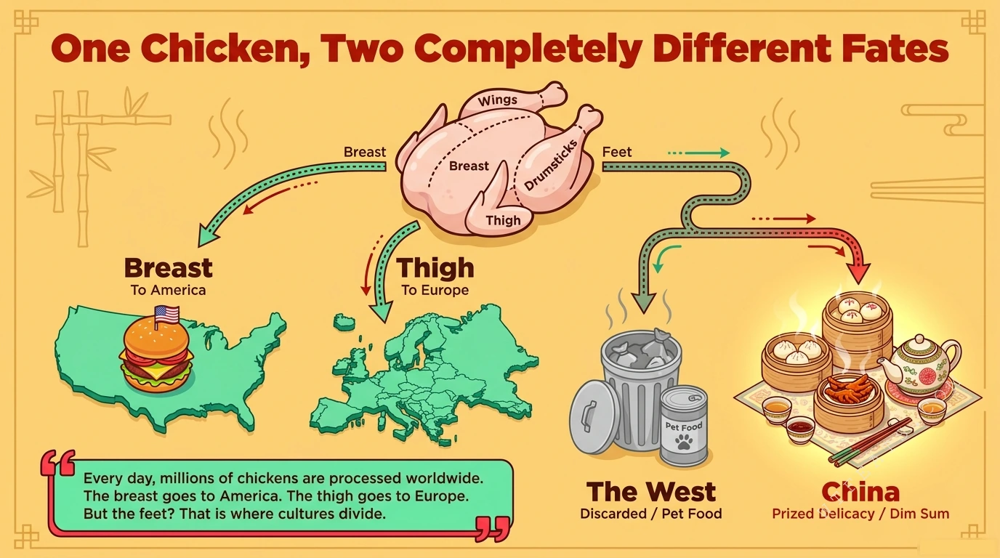

The Divide

One chicken, two completely different fates.
Every day, millions of chickens are processed worldwide. The breast goes to America. The thigh goes to Europe. But the feet? That is where cultures divide: discarded or rendered into pet food in the West, prized as a delicacy in China.